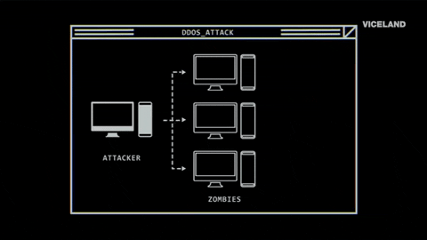
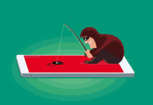

About me
Hello, my name is Luan. Currently, I am a young apprentice at the company Gazin, in the IT (Information Technology) area, in the city of Douradina, Paraná. I'm 17 years old and I'm here to show you a little of what I learned in these first months of work, and talk a little about it. When I arrived here for the first time, I was surprised. I thought it was an extremely contracted place, but it's actually the opposite of that. The staff is focused and participative. In the short time that I've been working here, I've already managed to learn some interesting things.
My opinion on programming
Even before I have delved into this field, I see that a large and vast sea of opportunities opens up before me. Several different areas, in different ways, for different people. So many languages, and each time it tends to increase. Today we live in a world where it is almost impossible to survive without the internet. People spend more time looking at screens than at themselves. So, imagine the power and responsibility of those who control and develop these areas? Without a doubt, it is something extremely great.
My goals
My goals for my life are to work with programming. Build a good financial condition. A profession that interests me in the same percentage is the area of cyber security, the "white hat" internet security nowadays ends up being almost forgotten by the majority of users. But unfortunately, no matter what you do, we will never be "safe", unfortunately.

What do hats white do?
White hats are ethical hackers who use their security skills and knowledge for legitimate and beneficial purposes. Unlike black hats who act maliciously, white hats contribute to the security of the internet and computer systems. In today's digital world where cyber threats are constantly evolving, white hats play a crucial role in protecting our data and infrastructure. They help organizations stay ahead of attackers and prevent security breaches. sometimes also called "ethical hackers" or "good hackers" are the antithesis of black hats. They explore computer systems or networks to identify their security flaws so they can make recommendations for improvement. It is essential to understand the difference between white hat hackers and black hat hackers. While white hats help improve cybersecurity and protect organizations, black hats pose a serious threat to online privacy. Promoting ethics in cybersecurity and collaborating with white hat professionals is essential to protect our systems and data in an increasingly digitalized world.
O What do hats black do? 
They break into computer systems to steal sensitive data such as financial information, personal data or intellectual property. Cyberattacks: Carry out attacks to bring down websites and interrupt services. Black hats are malicious hackers who use their system hacking skills for illegal or destructive purposes. Unlike white hats who act ethically, black hats pose a serious cybersecurity threat.
There are also hackers Gray Hat
Gray hat hackers operate in a middle zone between white and black hat hackers. They use their skills to exploit vulnerabilities in computer systems, but not always with the intention of causing harm. Gray Hat Hackers Find themselves somewhere in between. They may use hacking techniques to find security vulnerabilities, but they don't always follow the rules. For example, a gray hat hacker may break into a computer system without permission but then report the vulnerability to the system owner.
Examples of Gray Hat Activities:
- Hack a website to find and fix vulnerabilities before they are exploited by black hat hackers.
- Sell information about a vulnerability to a company that may be affected by it.
- Performing a penetration test on a system without authorization but with the intention of helping improve security.
How to prevent malicious hacker attacks?
Attack DDoS:
A DDoS attack, or distributed denial of service attack, is a malicious attempt to overload a server, service or network with artificial traffic, making it unavailable to legitimate users. Not even large companies have complete control over this. The acronym can also be accompanied by another “D”: DDoS which, in English, is the abbreviation for Distributed Denial of Service or distributed denial of service attack, in Portuguese. When a denial of service attack is distributed, it means that several machines are used to make simultaneous requests.
- Attack on Amazon Web Services em 2016, which took down sites like Netflix and Airbnb.
- Attack on Dyn in 2016, which affected sites such as Twitter, Spotify and Reddit.
- Attack on Google in 2020, which was the largest DDoS attack on record.
Attacks of Phishing: Deceiving to steal.
Criminals create emails or messages that look like legitimate messages from well-known companies or institutions. They may use similar logos, colors and language to deceive the user. Phishing is a type of cyber attack that attempts to trick the user into revealing confidential information, such as passwords, banking details or personal information. Phishing attacks are carried out through emails, text messages, links on websites or social networks, and even through phone calls. Phishing (pronounced: fishing) is an attack that attempts to steal your money or identity by causing you reveal personal information such as credit card numbers, banking information, or passwords on websites that pretend to be legitimate. Phishing is a type of cyberattack that persuades people to take an action that gives a scammer access to their device. It was chosen due to its similarity to another word in the English vocabulary, fishing, which means to fish.
- Attack on Gmail in 2017, which affected millions of users.
- Attack on Microsoft Office 365 in 2019, which targeted companies.
- Attack on the 2020 US presidential campaign.